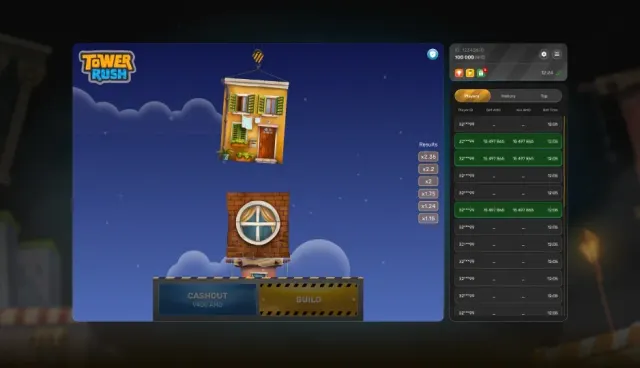
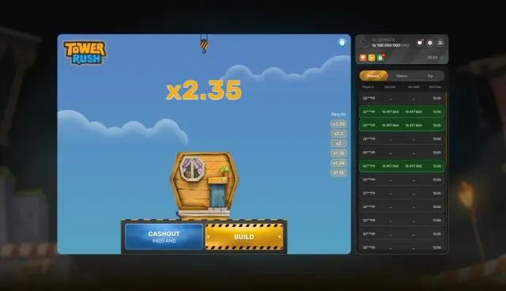

Strategy
How to Verify a Tower Rush Round: The Provably-Fair Check
Galaxsys publishes the seeds behind every round. Verifying one takes about two minutes and settles the only question worth asking about a crash game.
Tower Rush
Block timing, the provably-fair seed check and what Galaxsys actually publishes about the maths behind Tower Rush.

Strategy
Galaxsys publishes the seeds behind every round. Verifying one takes about two minutes and settles the only question worth asking about a crash game.

Strategy
The tower does not collapse at random heights. Here is how the risk per block changes as you build, and the range where most sessions quietly bleed out.